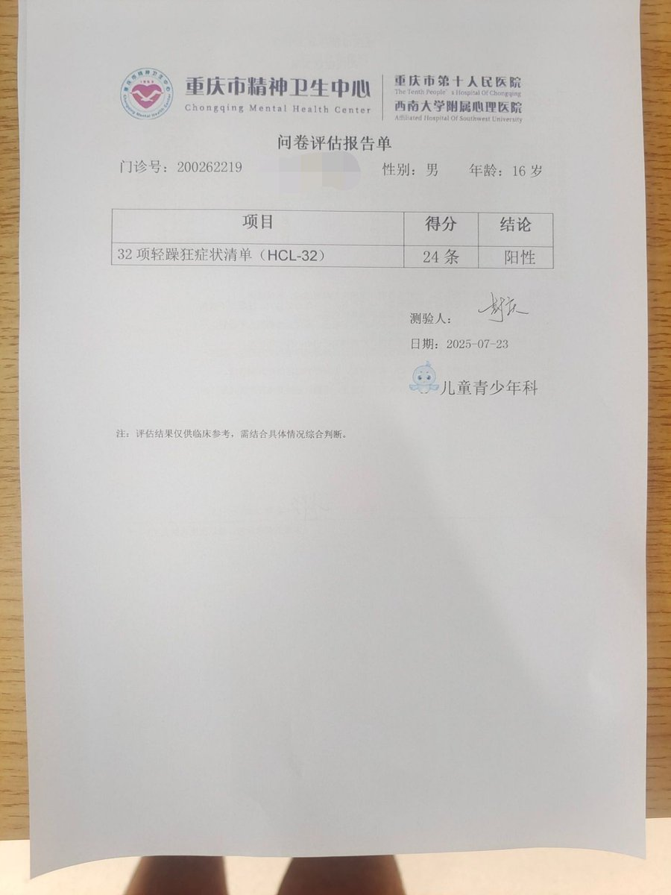
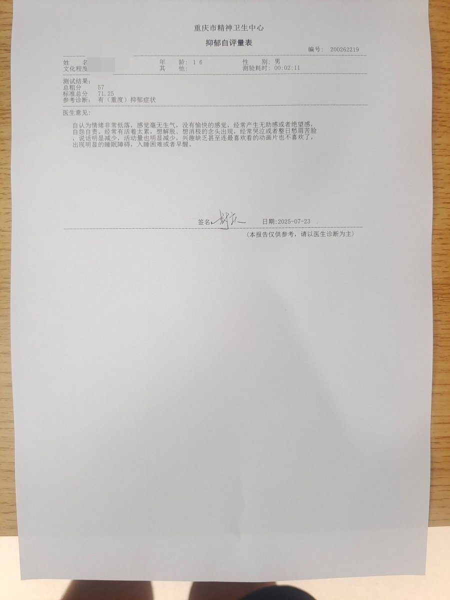
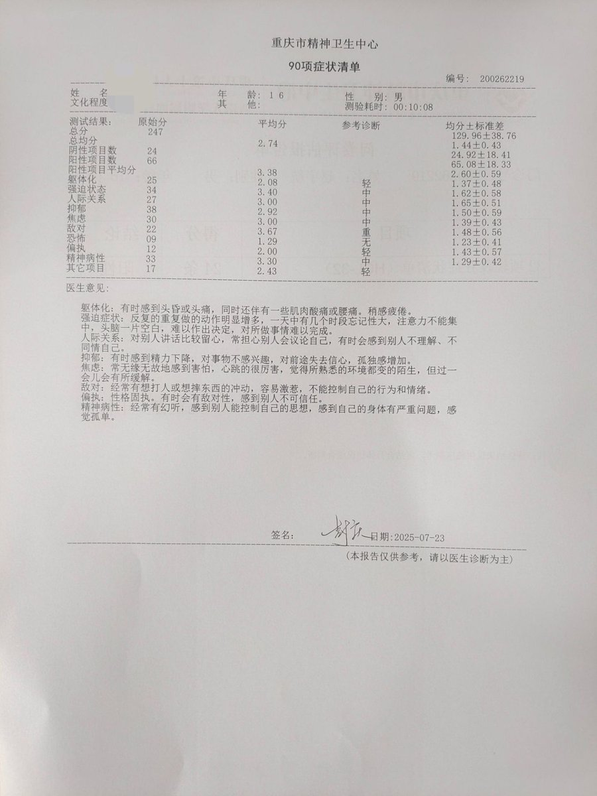
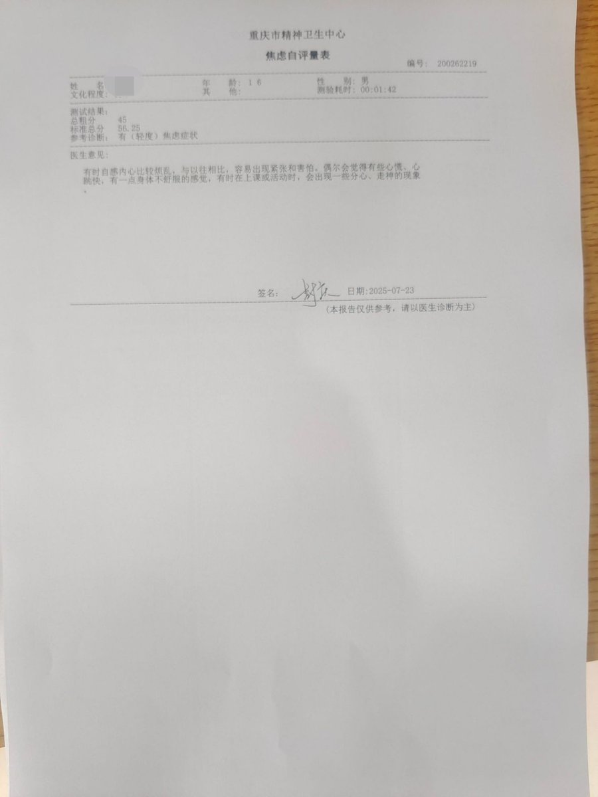

@erciyuanha87431 @ChenjieYin36248 @hyc945 @jinluomiao 为什么我这个表测出来也是重抑 貌似好像测出来之后一切都释怀了 连医生都不关心我🥲





最新报告死了算了
医生说那张重度抑郁不用管，测的不准吧
什么高功能自闭性障碍？我讨厌这个亚斯伯格综合症，让我的人生一点都不完美，我才16岁呀
没人能理解我，发疯的时候只被他人理解为抽象，我恨这个社会的认知
并不代表报复社会
我很久没跟真人说过多少话了吗？算了
随便圈点人吧，无人在意 https://t.co/G58nWhfTSg
医生说那张重度抑郁不用管，测的不准吧
什么高功能自闭性障碍？我讨厌这个亚斯伯格综合症，让我的人生一点都不完美，我才16岁呀
没人能理解我，发疯的时候只被他人理解为抽象，我恨这个社会的认知
并不代表报复社会
我很久没跟真人说过多少话了吗？算了
随便圈点人吧，无人在意 https://t.co/G58nWhfTSg